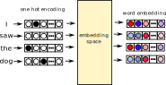
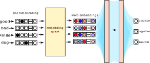

import numpy as npAdditional Neural Network Concepts
Neural Networks
Word Embeddings
Let’s say we were working on a problem with a very restrictive vocabulary with just 3 vocabulary items, and we were also using a very small word vector length of just 5 values. And also, unlike with real cases, the values in each dimension of the vector space was the same within each word.
embedding_space = np.array([[1]*5, [2]*5, [3] * 5])
# 3 rows = 1 row for each vocabulary item
# 5 columns = 5 vector dimensions
embedding_spacearray([[1, 1, 1, 1, 1],
[2, 2, 2, 2, 2],
[3, 3, 3, 3, 3]])And let’s say we’ve already encoded our input data as a sequence of integers.
data = np.array([1, 1, 0, 0, 2])To get the word vector for the first datapoint, we could do matrix indexing.
embedding_space[data[0],:]array([2, 2, 2, 2, 2])We can even get the word vectors for all of the datapoints this way.
embedding_space[data, :]array([[2, 2, 2, 2, 2],
[2, 2, 2, 2, 2],
[1, 1, 1, 1, 1],
[1, 1, 1, 1, 1],
[3, 3, 3, 3, 3]])This isn’t usually how it’s done in neural network models, though. One reason is that the embedding_space is a matrix of numbers that the model is trying to learn, and the learning mechanism (backpropogation) doesn’t work right out of the box with indexing this way.
Instead, let’s convert our data into one-hot encoding
from sklearn.preprocessing import OneHotEncoderone_hot = OneHotEncoder(sparse = False)
data_onehot = one_hot.fit_transform(data.reshape(-1,1))
data_onehotarray([[0., 1., 0.],
[0., 1., 0.],
[1., 0., 0.],
[1., 0., 0.],
[0., 0., 1.]])Now, to get the word vector for the first data point, we can use matrix multiplication.
# indexing the first row
data_onehot[0, :] @ embedding_spacearray([2., 2., 2., 2., 2.])And we can get the word embeddings for the whole dataset the same way.
data_onehot @ embedding_spacearray([[2., 2., 2., 2., 2.],
[2., 2., 2., 2., 2.],
[1., 1., 1., 1., 1.],
[1., 1., 1., 1., 1.],
[3., 3., 3., 3., 3.]])To see why this works, let’s quickly refresh on how matrix multiplication works. The first datapoint has the one-hot encoding [0, 1, 0]. When we do matrix multiplication, we take the dot product of the first row of matrix A and the first column of matrix B.
A first row: [0, 1, 0]
B first column: [1, 2, 3]
multiply
[0, 2, 0]
sum
[2]Then we move on to the second column of matrix B, etc. So, what the one-hot encoding vector [0, 1, 0] winds up doing is pulling out just the second row of a three row matrix. When we do matrix multiplication for the whole dataset we get back the word embeddings for each datapoint.
You’ll often see this whole process presented in figures & diagrams of neural networks something like this:

Pretraining and fine tuning
If we were wanting to train a model that classified the valence of words as positive, negative, or neutral, we might set it up like this:

Glossing over details like layer size and activation functions, the process might look like this:
- Convert text labels to one-hot encoding.
- Get the word vectors for each word from the embedding space.
- Feed each word embedding through a two layer neural network.
- Feed the output into a three node output layer.
Now, depending on the vocabulary size and the word vector size, the time spent training this model from scratch (that is, starting off all weights from a random value), most of the time this model would spend in training would probably in getting all of the weights just right in the embedding space. That’s not necessarily the best use of time and energy.
So, what’s commonly done is to get “pretrained” word embeddings. For example, word2vec or GloVe embeddings which were trained on the task of predicting whether words appeared in the context of other words could be re-used. The idea here is that these embeddings already encode some kind of word “meaning”, and will at least be closer to the optimal values for the word embedding space than a completely random initialization.
There are then one of two ways you can approach training this sentiment model. One would be just to take the pretrained embeddings as-is, and make it the job of the neural network layers to figure out how to weigh and recombine the inputs to classify the words. This is sometimes called “freezing” the word embedding layer.
Alternatively, you could choose not to “freeze” the word embeddings, and as the model tries to minimize the loss function by updating the weights between layers, it will also update the weights in the embedding space. This is called “fine tuning”.
It seems like most of the pretraining of large embedding spaces (whether it’s text, audio, etc) is being carried out by well funded and resourced companies like Google, Meta, OpenAI, etc, and most additional work done by researchers or smaller organizations fine tunes these embeddings.
“Feature Engineering”
Technically, we’ve already done a lot of feature engineering in the course, we just haven’t called it that yet. “Feature Engineering” is the process of moving from your raw data (structured or unstructured) to whatever numbers go into your model counts as “feature engineering.”
Tokenizing & One-Hot encoding
For example, taking plain text and tokenizing it is a feature engineering step. Let’s work over Jabberwocky.
jabberwocky = "’Twas brillig, and the slithy toves\
Did gyre and gimble in the wabe:\
All mimsy were the borogoves,\
And the mome raths outgrabe.\
\
“Beware the Jabberwock, my son!\
The jaws that bite, the claws that catch!\
Beware the Jubjub bird, and shun\
The frumious Bandersnatch!”\
\
He took his vorpal sword in hand;\
Long time the manxome foe he sought—\
So rested he by the Tumtum tree\
And stood awhile in thought.\
\
And, as in uffish thought he stood,\
The Jabberwock, with eyes of flame,\
Came whiffling through the tulgey wood,\
And burbled as it came!\
\
One, two! One, two! And through and through\
The vorpal blade went snicker-snack!\
He left it dead, and with its head\
He went galumphing back.\
\
“And hast thou slain the Jabberwock?\
Come to my arms, my beamish boy!\
O frabjous day! Callooh! Callay!”\
He chortled in his joy.\
\
’Twas brillig, and the slithy toves\
Did gyre and gimble in the wabe:\
All mimsy were the borogoves,\
And the mome raths outgrabe."First, we need to decide how to tokenize it. Given that most of these words are intentionally novel, something like Byte Pair Encoding would be a good tokenizing approach. I’ll use a pre-trained tokenizer from the bpemb package.
from bpemb import BPEmb
bpemb_en = BPEmb(lang="en")jabberwocky_tokens = bpemb_en.encode(jabberwocky)
jabberwocky_tokens[0:10]['▁', '’', 'tw', 'as', '▁br', 'ill', 'ig', ',', '▁and', '▁the']Depending on what I’m trying to do with the data, I’ll probably want to get an embedding space for for the tokens, which comes with the bpemb models.
embedding_space = bpemb_en.vectors
embedding_space.shape(10000, 100)It’s not completely straightforward to go from the text-based tokens to their embeddings. Instead, I’ll create a one-hot encoding of the tokens. This takes two steps. First, get the index ids for each token
jabberwocky_ids = bpemb_en.encode_ids(jabberwocky)
jabberwocky_ids[0:10][9912, 9958, 4265, 35, 473, 141, 81, 9934, 34, 7]Then, make a one-hot encoding matrix
# first, a big matrix of all zeros
jabberwocky_onehot = np.zeros(shape = (len(jabberwocky_ids), 10000))
# then, set each data row-by-tokenindex cell to 1
jabberwocky_onehot[range(len(jabberwocky_ids)), jabberwocky_ids] = 1We can now use jabberwocky_onehot as the input to a model which uses embedding_space either as a frozen or a finetunable layer.
The process of
- Choosing a tokenization procedure
- Converting the tokens to a one-hot encoding
Is feature engineering.
Data normalizing
The process of data normalizing data is another kind of “feature engineering”. For example, vowel formant usually has values in terms of Hz.
import pandas as pd
vowels = pd.read_csv("data/s03.txt", sep = "\t")vowels["F1"]0 771.5
1 639.5
2 501.2
3 441.3
4 425.7
...
6447 525.4
6448 607.6
6449 428.8
6450 618.1
6451 429.3
Name: F1, Length: 6452, dtype: float64Converting these Hz values to “standard” or “z-score” values is a form of feature engineering.
vowels["F1_z"] = (vowels["F1"] - vowels["F1"].mean())/vowels["F1"].std()
vowels["F1_z"]0 2.601486
1 1.450600
2 0.244786
3 -0.277472
4 -0.413486
...
6447 0.455782
6448 1.172470
6449 -0.386457
6450 1.264017
6451 -0.382098
Name: F1_z, Length: 6452, dtype: float64Hand crafted “synthetic” features, and other coding
Data processing that in other areas of quantitative analysis might be called “coding” could be called “feature engineering.” For example, Purse, Fruehwald, and Tamminga (2022) recently explored the effect of different word frequency measures on the rate of TD Deletion. One of the measures we used was “conditional” frequency. For example, the word walked will have some freqyency, \(C(\text{walked})\). But the lemma walk appears in many different words, like walk, walking, walker, walks. So we also got calculated the lemma fequency, which is just the sum of all of these counts: \(C_L(\text{walk}) = C(\text{walk})+C(\text{walked}) + C(\text{walks})+\ldots\).
We though that maybe, the “conditional frequency”, or the frequency with which the lemma walk appears as walked might also play a role. So \(C_c(\text{walked}) = \frac{C(\text{walked})}{C_L(\text{walk})}\). Coming up with that measure is an example of “feature engineering”, as is other features we can extract, like the preceeding segment, the length of the word, etc.
References
Purse, Ruaridh, Josef Fruehwald, and Meredith Tamminga. 2022. “Frequency and morphological complexity in variation.” Glossa: a journal of general linguistics 7 (1). https://doi.org/10.16995/glossa.5839.